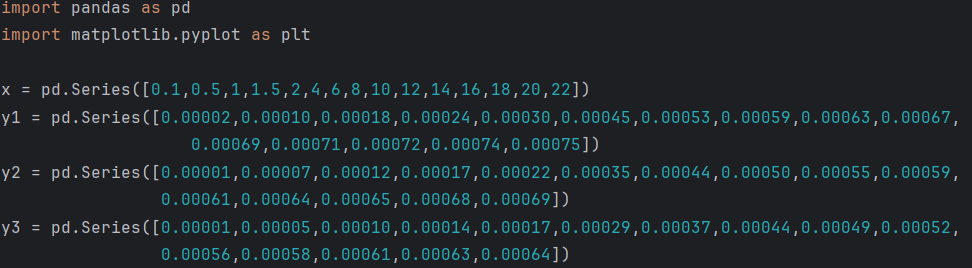
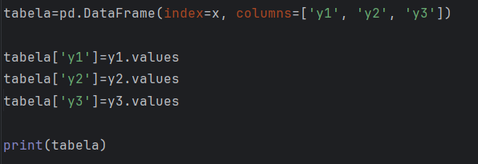
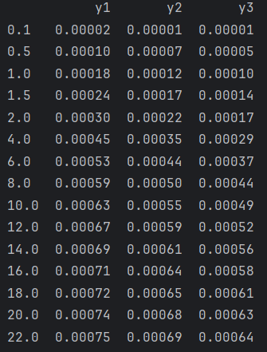
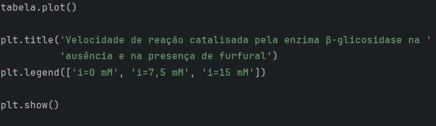
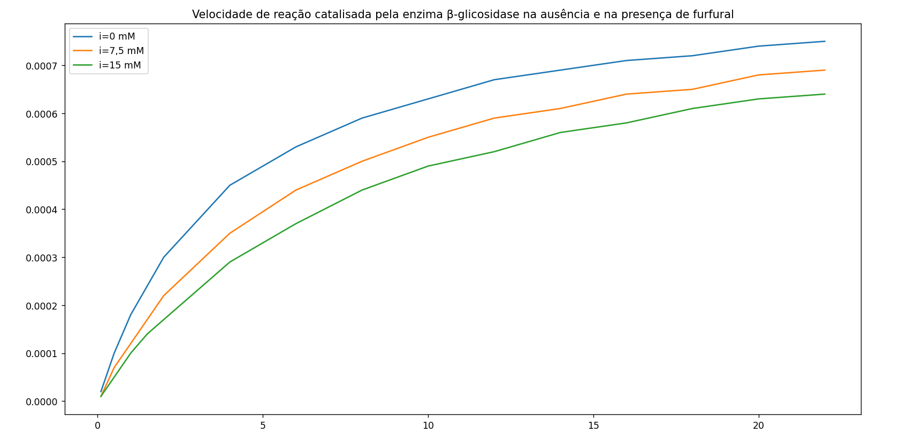

O Pandas é uma biblioteca para armazenamento, carregamento e tratamento de uma quantidade de dados de maneira ágil. Usando essa biblioteca é fácil transformar séries de dados em tabelas para organizar as informações. Uma vez que as informações se encontrem em tabelas, existem diversos métodos e funções para manipular os dados.
Nessa postagem, vamos transformar 3 séries de dados em um DataFrame e, posteriormente, vamos demonstrar que é muito mais fácil plotar um gráfico uma vez que os dados estejam no formato de um DataFrame.
Os dados que vamos explorar são os mesmos que foram analisados na postagem Obtenção de Parâmetros Cinéticos de Enzimas a partir de Dados Experimentais usando Python. São os dados de velocidade de reação catalisada pela enzima β-glicosidase.
Primeiramente, temos que transformar os dados em uma série do pandas. Isso é feito através do comando pd.Series([dados]). Temos 3 séries de dados em y e uma única série de dados em x. Para declará-las usando pandas, devemos prosseguir conforme Figura 1.

Agora queremos transformar essas séries de dados em uma tabela, que possa ser impressa no terminal no formato de uma tabela. Os comandos para tanto são apresentados na Figura 2. Transformamos as séries de dados num DataFrame, que é a estrutura de dados do python que representa uma tabela. O comando tabela['y1']=y1.values é necessário para preencher a coluna 'y1' com os dados da Serie, que até então é uma coluna vazia. Usando o comando print podemos imprimi-la e assim irá aparecer no terminal conforme Figura 3.


Agora vamos ver como é fácil de plotar os dados do dataFrame no formato de um gráfico usando o pandas e o matplotlib. Na Figura 4 são apresentados os comandos. Basicamente precisamos apenas utilizar o método .plot() e o comando plt.show(). Os outros comandos adicionados são necessários apenas para inserir um título no gráfico e inserir uma legenda. É muito fácil criar um gráfico a partir de um dataFrame. Na Figura 5 está plotado o gráfico.


O uso de DataFrames torna a análise e visualização de dados muito mais simples e eficiente, sendo uma ferramenta essencial para aplicações científicas e de engenharia.
Desenvolvimento : Química Programada